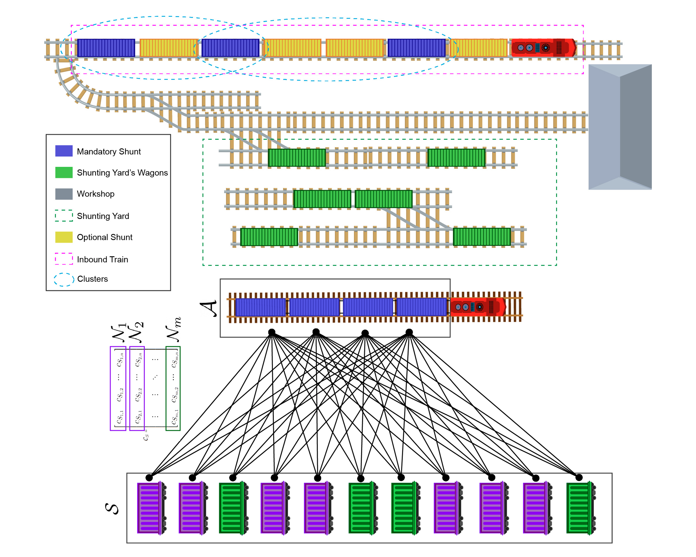
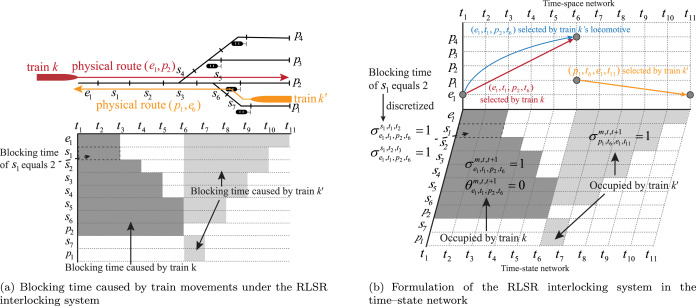
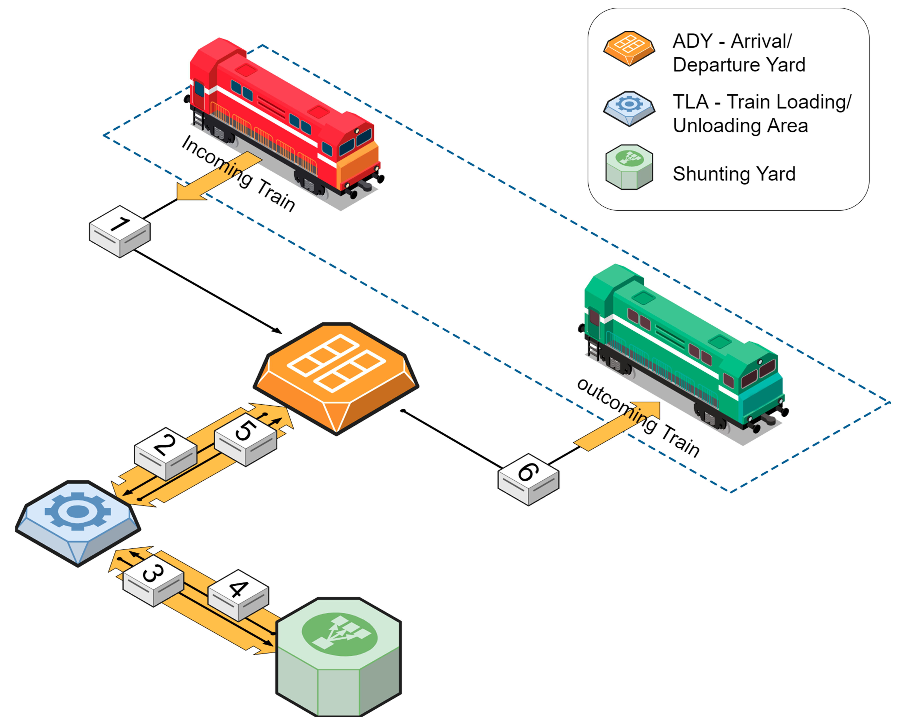
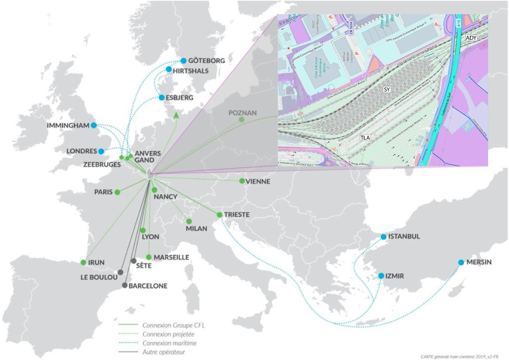
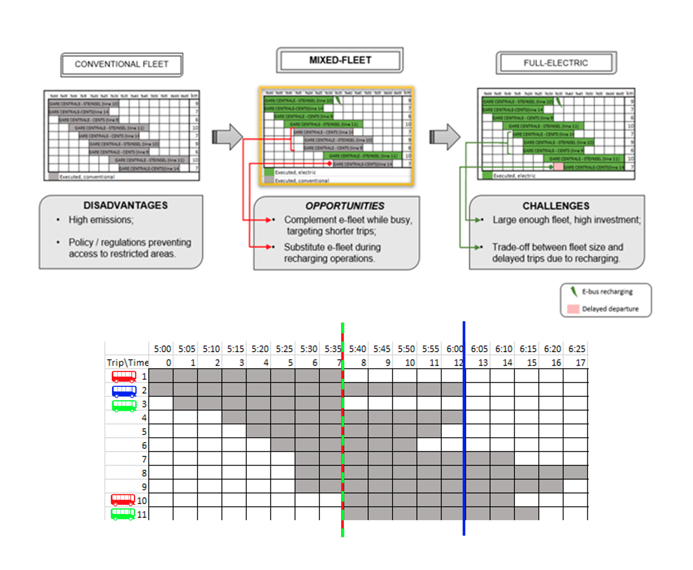
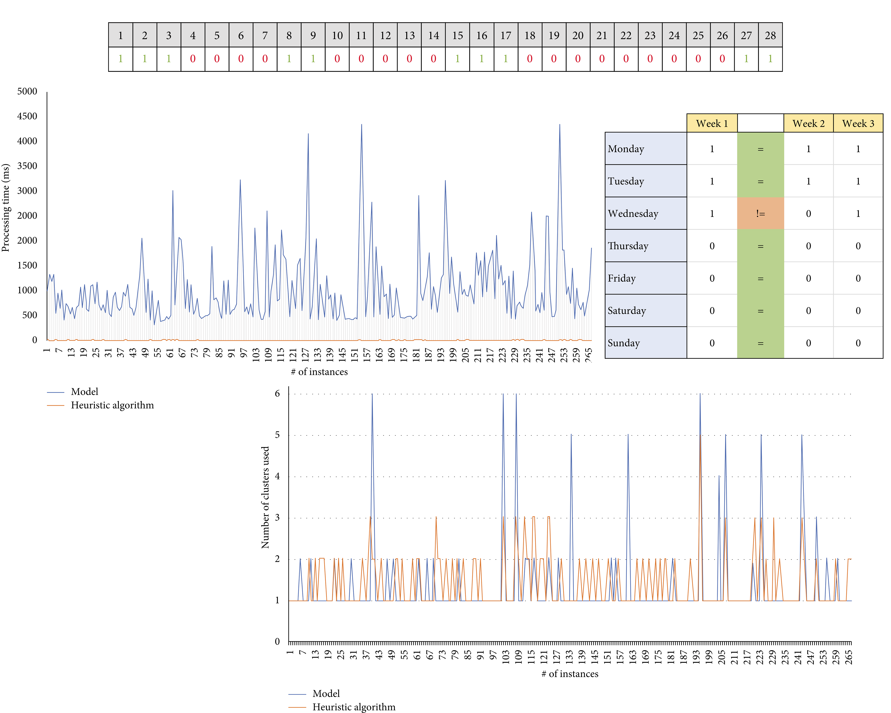

Publications
Three main projects are presented as follows:
-
The first project is in collaboration with Dr. Federico Bigi and Professor Francesco Viti from the University of Luxembourg (Mobilab, CFL) and aims to implement an Event-Based Simulation Framework (EBSF) to optimize Shunt-In and Shunt-Out operations on freight trains with the goal of improving medium to long-term KPI performance.
-
The second project involves collaboration with Dr. Marco Rinaldi and Professor Francesco Viti from the University of Luxembourg (Mobilab, CFL) and TU Delft. The objective is to address the mixed-fleet multi-terminal electric bus scheduling problem and develop a metaheuristic approach for optimally assigning a mixed fleet of Volvo buses to scheduled services.
-
The final project is a partnership with Trenitalia's Department of Industrial Planning and focuses on generating smart natural language sentences from train bitmaps calendar to express the periodical service timetable.
Computers & Industrial Engineering
Optimal Management of Full Train Load Services in the Shunting Yard: A Comprehensive Study on Shunt-In Shunt-Out Policies
Bosi, T.
Bigi, F.
D’Ariano, A.
Viti, F.
Pineda-Jaramillo, J.

Shunty is a software project for rail industry decision-makers and is part of the ANTOINE national project funded by CFL (Luxembourg Railways). Shunty provides a comprehensive environment for analyzing shunting yard issues.
Read more..
Transportation Research Part C: Emerging Technologies
Optimal Platforming, Routing, and Scheduling of Trains and Locomotives in a Rail Passenger Station Yard
Zhang, B.
Zhang, Y.
D'Ariano, A.
Bosi, T.
Lu, G.
Peng, Q.

This study considers the high correlation between train and locomotive operations and proposes an extension of the TPP that simultaneously optimizes the routing and scheduling of trains and locomotives in a rail passenger station yard.
Read more..
Transportation Research Board (TRB) 102nd Annual Meeting (Washington DC)
Addressing the Impact of Maintenance in Shunting Operations through Shunt-In Policies for Freight Train Operations
Bigi, F.
Bosi, T.
Pineda-Jaramillo, J.
Viti, F.
D’Ariano, A.

A long-term analysis of Shunt-In policies considering maintenance constraints on Freight Train shunting operations. This study examines the effects of maintenance constraints on key performance indicators for shunting and rolling stock management, through assessment of various Shunt-In strategies for assigning wagons to outbound trains.
Read more..
IEEE Access
Short-term Arrival Delay Time Prediction in Freight Rail Operations using Data-driven Models
Pineda-Jaramillo, J.
Bigi, F.
Bosi, T.
Viti, F.
D’Ariano, A.

The purpose of this study is to present the use of data-driven models with regression algorithms to create a short-term model to predict arrival delay times in rail freight operations, as well as an investigation of the underlying causes of delay and the expected impact on operations.
Read more..
Journal of Rail Transport Planning & Management
Long-term Fleet Management for Freight Trains: Assessing the Impact of Wagon Maintenance through Simulation of Shunting Policies
Bigi, F.
Bosi, T.
Pineda-Jaramillo, J.
Viti, F.
D’Ariano, A.

Our study aims to examine the long-term effects of mileage-based maintenance on freight train management and its impact on shunting operations and fleet management.
Read more..
15th International Conference on Advanced Systems in Public Transport (Tel Aviv, Israel)
An Advanced Genetic Algorithm for Large-scale Mixed-fleet Multi-terminal Electric Bus Scheduling
Rinaldi, M.
Bosi, T.
Viti, F.
D’Ariano, A.

The purpose of this study is to design a metaheuristic solution for the Mixed-fleet Multi-terminal Electric Bus Scheduling problem in the city of Luxembourg, specifically for the Volvo mixed fleet of electric and hybrid buses. The solution should effectively handle the complexities of urban-sized instances.
Read more..
Journal of Advanced Transportation
Linear Programming Model and Online Algorithm for Customer-Centric Train Calendar Generation
Bosi, T.
D’Ariano, A.

This study presents a linear programming model and a fast, flexible heuristic algorithm for generating descriptive sentences from train calendars. The algorithm, using the "Divide and Conquer" approach, processes the queried calendar period as a whole, dividing it into smaller subsets and processing each one in succession.
Read more..
Minor Contributions
-
Bosi, T., and Bigi, F., “A Sustainability-Centric Methodology for the Shunt-In Shunt-Out Problem”, TRA VISIONS 2022 Young Researchers Competition, Lisbon, Portugal
-
Bigi, F., Bosi, T., Pineda-Jaramillo, J., Viti, F., and D’Ariano, A., “The Wagon Assignment Policy problem: Policy Comparison on the Wagon Fleet optimization”, 10th symposium of the European Association for Research in Transportation (hEART22), Leuven, Belgium
-
Bosi, T., Bigi, F., D’Ariano, A., and Viti, F., “The Shunt-In Shunt-Out Problem in Rail Freight Transport: an Event-Based Simulation Framework for Sustainable Rolling Stock Management”, 10th International Conference on Railway Operations Modelling and Analysis (RaiBelgrade23), Belgrade, Serbia
-
Bigi, F., Bosi, T., Viti, F., and D’Ariano, A., “Assessing the Impact of Maintenance Constraints for the Rolling Stock Problem in Freight Operations”, the 8th International Conference on Models and Technologies for Intelligent Transportation Systems (MT-ITS 2023), Nice, France
-
Bosi, T., Bigi, F., D’Ariano, A., and Viti, F., “A MILP Model for the Wagon Shunt-in Shunt-out Problem in Rail Freight Transport”, International Conference on Optimization and Decision Science (ODS22), Florence, Italy
-
Bosi, T., D’Ariano, A., Amorosi, L., and Giacco, G. L., “A Fast and Effective Greedy Heuristic for On-line Train Calendars Generation”, 7th International Conference on Models and Technologies for Intelligent Transportation Systems (MT-ITS), On-line